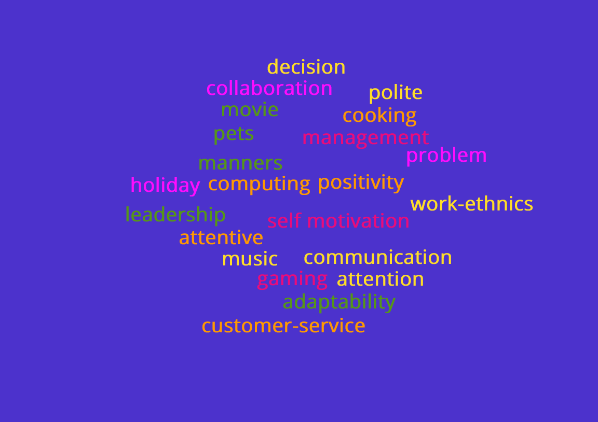

Pauline Gordon - Website Designer and Developer
I have had many jobs over the years due to moving around and the birth of the my children. I have had to recently change my job direction due to Chronic Obstuctive Pulmonary Disease. The condition does not make myself to be a person who is bad time keeping. I keep on top of my condition and manage it very well. I have worked in retail for many years and feel the lifting of products is something i can not do anymore. I know I did not need to mention this on here, but i am an honest person and straight forward and like to be upfront.
My work experience as follows :-
| Company | Dates of Employment | Job Title | Job Description |
|---|---|---|---|
| Arla Foods, Lockerbie Creamery, Lockerbie, DG11 1LW | October 2020 - Present | Canteen Assistant | Dishwashing,Serving customers, use of computerised til, mopping and sweeping of floor, cooking extra of products that we run of of, keeping kitchen and dishwashing area clean and tidy, money handling, Customer service skills, being versatile on what is needing done during breakfast and lunch. |
| Eastriggs Social Club, Singapore Road, Eastriggs, DG12 6QN | February 2017 - February 2019 | Bar Person | Serving of Customers, changing kegs, replenishment of stock, money handling, collecting of glasses, dishwashing, Opening and closing of premises, Keyholder, Keeping bar area tidy and clean. |
| Shell Elgin,Moycroft Ind Estate, Elgin | July 2009 - July 2010 | Customer Assistant | Serving customers, Keyholder, opening up and closing down of the fuel station, replenishment, cleaning of pumps-toilets-shop floor, checking dates on products, cashing up of til, money handling. |
| Shell Keith, Regent Street, Keith, AB55 5ED | March 2007 - August 2008 | Customer Assistant | Nightshift working, serving customers, replenishment, checking of dates, cleaning of shop, cashing up after shift, putting out newspapers, counting of stock for stock taking, this was a job where you were working alone of shift, so you had full responsibility of the fuel station. | Tesco, Lochfield Road, Dumfries | August 2002 - June 2004 | Customer Assistant | Replenishment, taking in back door deliveries, setting up of new seasonal areas of the store, working to the floor plan of replenishment, taking care of customers who couldnt find products, stock taking when needed, working of all areas of the store. |
| Barony Agricultural College, Parkgate, Dumfries, DG1 3NE | August 2001- August 2002 | Cleaning Assistant | Dishwashing, cleaning of lecture rooms-toilets-staff rooms- hall ways and computer rooms. When no students we painted walls and made the college ready for next college year. |
| Dunlops veterinary Supplies, College Mains Road, Dumfries,DG2 0BS | May 1999 - August 2001 | Labeler and making up orders for delivery. | Putting on labels on veterinary products with correct dates, putting through orders on computers, getting products for orders, making sure all orders are complete and put on correct pallet for the van drivers. |

Last year throughout the Information Techology Course we progressed through an internet site which gave us tasks and awards gaining knowledge of the Information Technology. I have added a link to site below
I have many pastimes, i enjoy walking, computing, watching movies, listening to music, holidays, gaming and cooking. I am a large animal lover and have pets also.
Last year throughout the Information Techology Course we progressed through an internet site which gave us tasks and awards gaining knowledge of the Information Technology. I have added a link to site below
Summary: Highly motivated and reliable individual seeking opportunity to utilise diverse experience, offering strong customer service and support to individuals and business operations..
I aim to obtain long term employment with growth and potential with a company where can contribute hardworking ability and positive attitude as well as leadership skills.